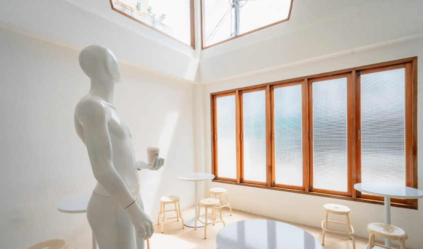

<div class="container" fxLayout="column" fxFlex>
    <mat-card fxFlex fxLayout="column">
        <mat-toolbar color="primary" style="height: 150px;">
            <span class="text-page"><strong>Gokotta coffee roaster</strong></span>
        </mat-toolbar>
        <div fxLayout="row" fxLayoutAlign="center center" fxFlex>
            <div fxFlex="50" fxLayout="column">
                <mat-card fxLayoutAlign="center center"></mat-card>
            </div>
            <div fxLayout="column" fxFlex="50">
                <div fxFlex="25" fxLayout="row">
                    <mat-card></mat-card>
                    <mat-card></mat-card>
                </div>
                <div fxFlex="25" fxLayout="row">
                    <mat-card></mat-card>
                    <mat-card></mat-card>
                </div>
            </div>
        </div>
        <div fxLayout="column" fxFlex="50">
            <mat-card>
                <div fxLayout="column">
                    <mat-toolbar color="primary">
                        <span><strong>รายละเอียดเกี่ยวกับค่าเฟ่</strong></span>
                    </mat-toolbar>
                    <div>
                        <p><strong class="detail-Pros">จุดเด่น</strong></p>
                        <p>
                            ร้าน Gokotta coffee roaster เรียกได้ว่าสาวกกาแฟต้องห้ามพลาดร้านนี้เลยนะคะ
                            เพราะแค่เปิดประตูเข้ามาในร้านก็ได้กลิ่นคั่วของเมล็ดกาแฟที่หอมฟุ้งแล้วค่ะ
                            ตัวร้านถูกตกแต่งด้วยโทนสีขาวมองดูแล้วเรียบง่ายและสบายตา มีกรอบรูปติดผนังอยู่รอบ ๆ
                            อีกทั้งจุดเด่นของที่นี่เลยก็คือโถงของตัวร้านที่พอมองขึ้นไปแล้วจะเป็นกระจกที่สามารถมองเห็นความสุดใสของท้องฟ้าได้อย่างชัดแจ๋วเลยค่ะ
                            ส่วนวันไหนมีแดดหน่อยพอถ่ายรูปออกมาแล้วแสงจะสวยมาก สำหรับเมนูที่เป็นจุดเด่นของร้านคงหนีไม่พ้น
                            เมนูกาแฟ อย่างเช่น อเมริกาโน่ เพราะเมล็ดกาแฟของที่นี่คั่วเอง
                            เลยทำให้รสชาติที่เป็นเอกลักษณ์และไม่เหมือนที่อื่น
                            ส่วนการออกแบบเมนูที่นี้ก็แปลกตาสุดๆค่ะเพราะจะใช้ความรู้สึกเป็นหลัก
                            ใครมีต้องการเสพความคูลหรือสาวกกาแฟต้องห้ามพลาดที่นี่เลยค่ะ
                        </p>
                    </div>
                    <div>
                        <p><strong class="detail-Pros">วันเวลา เปิด-ปิด</strong></p>
                        <p>
                            เปิดวันอังคาร-อาทิตย์ 6.00–18.00 น. ปิดวันจันทร์
                        </p>
                    </div>
                    <div>
                        <p><strong class="detail-Pros">เบอร์โทรติดต่อ</strong></p>
                        <p>
                            0970454437
                        </p>
                    </div>
                    <div>
                        <p><strong class="detail-Pros">ตั้งอยู่ที่</strong></p>
                        <p>
                            11/1 ซอย ยิงเป้า 4 ตำบลพระปฐมเจดีย์ อำเภอเมืองนครปฐม นครปฐม
                        </p>
                    </div>
                    <div>
                        <p><strong class="detail-Pros">Map Location</strong></p>
                        <button mat-raised-button color="accent" (click)="openMap()">Open Google Map</button>
                    </div>
                </div>
            </mat-card>
        </div>
    </mat-card>
</div>